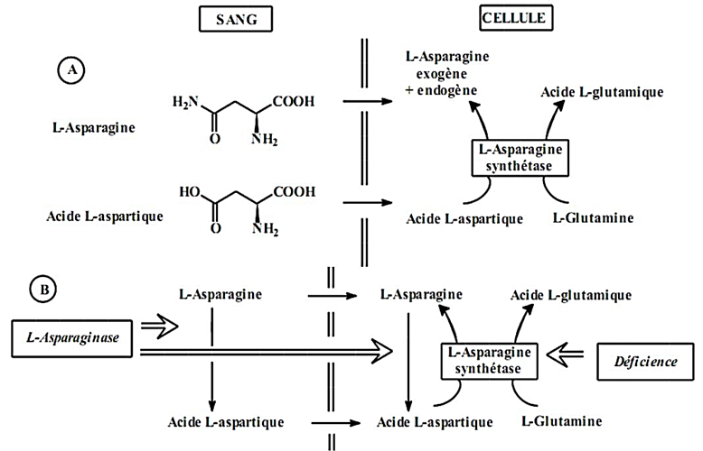

7.9
L-Asparaginase
 La L-asparaginase est une enzyme qui hydrolyse la L-Asparagine en L-Aspartate. La diminution de L-Asparagine dans le sang entraîne une inhibition de la synthèse protéique dans les cellules de la leucémie aiguë lymphoblastique, qui ne peuvent en effet pas synthétiser la L-Asparagine.